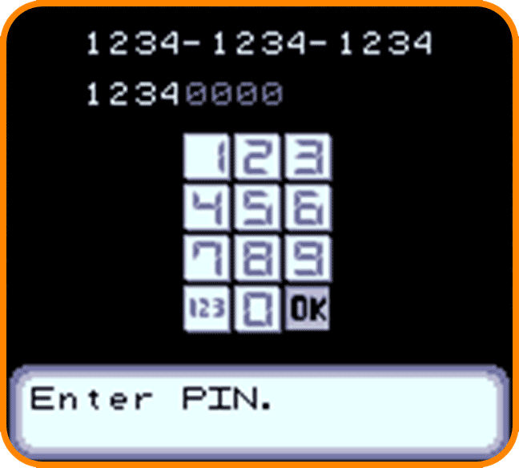

THE OFFICIAL PSI FREAK WEBSITE!
New Player ManualGet ready for an exhilarating new quest with the latest hit for PC! Discover a world where science and daily life mix, giving normal people remarkable powers! |
|  | Download and unlock your demo! |
Choose who you are |
 |
 |
Introduce yourself |
The world is growing... |
 |
|
Gear up for a thrilling adventure in Psi Freak! Experience a captivating story where a revolutionary microimplant grants a select few the ability to control elements and perform psionics. Armed with common items and toys, you’ll engage in epic showdowns. This adventure is perfect for all ages.
|
< Return to home page. |